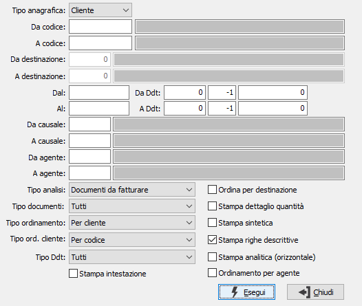

Lista Ddt
Il programma effettua la stampa dei Ddt esistenti in archivio in base ai parametri inseriti dall’utente.
E’ possibile stampare i documenti relativi ad una tipologia omogenea di Ddt, e/o ad uno o più cliente/fornitore entro limiti di data specificati.
E’ possibile selezionare solo i Ddt da fatturare oppure tutti i Ddt oppure solo i fatturati.

TIPO ANAGRAFICA: definisce il tipo di anagrafica da analizzare: clienti o fornitori.
DA CODICE: eventuale codice del cliente o del fornitore, in base al tipo selezionato, presente in anagrafica, da cui si vuole iniziare la selezione di analisi. Confermando a vuoto, la selezione inizia dal primo cliente/fornitore valido. Sul campo sono attive le funzioni di ricerca (F9).
A CODICE: eventuale codice del cliente o del fornitore, in base al tipo selezionato, presente in anagrafica, con cui si vuole terminare la selezione di analisi. Confermando a vuoto, la selezione termina con l'ultimo cliente/fornitore valido. Sul campo sono attive le funzioni di ricerca (F9).
DA DESTINAZIONE: codice della destinazione del cliente, da cui si vuole iniziare la selezione di analisi. Confermando a vuoto, la selezione inizia dalla prima destinazione valida; il campo è attivo solo se viene analizzato un unico cliente. Sul campo sono attive le funzioni di ricerca (F9).
A DESTINAZIONE: codice della destinazione del cliente, con cui si vuole terminare la selezione di analisi. Confermando a vuoto, la selezione termina con l'ultima destinazione valida; il campo è attivo solo se viene analizzato un unico cliente. Sul campo sono attive le funzioni di ricerca (F9).
DAL: eventuale data del documento da cui deve iniziare l’analisi dei documenti relativamente ai precedenti parametri di selezione. Confermando a vuoto, l’analisi inizia con il primo documento valido.
AL: eventuale data del documento con cui si desidera terminare l’analisi dei documenti relativamente ai precedenti parametri di selezione. Confermando a vuoto, l’analisi si conclude con l'ultimo documento valido.
DA DDT: tre campi per contenere rispettivamente anno, serie sezionale e numero del Ddt da cui si vuole iniziare la selezione. Confermando a vuoto con serie -1, la selezione inizia dal primo Ddt compatibile con i successivi parametri.
A DDT: tre campi per contenere rispettivamente anno, serie sezionale e numero del Ddt con cui si vuole concludere la selezione. Confermando a vuoto con serie -1, la selezione termina con l’ultimo Ddt compatibile con i successivi parametri.
DA CAUSALE: codice della causale documento da cui si vuole iniziare la selezione. Confermando a vuoto, la selezione inizia dalla prima causale valida. Sul campo sono attive le funzioni di ricerca (F9).
A CAUSALE: codice della causale documento con cui si vuole iniziare la selezione. Confermando a vuoto, la selezione termina all’ultima causale valida. Sul campo sono attive le funzioni di ricerca (F9).
DA AGENTE: codice dell'agente da cui si vuole iniziare la selezione. Confermando a vuoto, la selezione inizia dal primo agente valido. Sul campo sono attive le funzioni di ricerca (F9).
A AGENTE: codice dell'agente con cui si vuole iniziare la selezione. Confermando a vuoto, la selezione termina all’ultimo agente valido. Sul campo sono attive le funzioni di ricerca (F9).
TIPO ANALISI: consente di selezionare per l'analisi i Ddt da fatturare, quelli fatturati oppure tutti i Ddt presenti.
TIPO DOCUMENTI: consente di selezionare per l'analisi i Ddt in relazione allo stato di sospensione. I valori possibili sono: tutti, solo sospesi, escluso i sospesi.
TIPO ORDINAMENTO: definisce il tipo ordinamento della stampa: per cliente, per numero.
TIPO ORDINAMENTO CLIENTE: attivo solo se l'ordinamento è per cliente; definisce se i clienti devono essere riportati per codice o per ragione sociale.
TIPO DDT: il campo è presente solo se è attivo il modulo del conto lavoro attivo; consente di specificare quali Ddt si vogliono analizzare: tutti, solo quelli del conto lavoro attivo, solo Ddt di vendita escludendo quelli del conto lavoro attivo.
ORDINA PER DESTINAZIONE: in caso di ordinamento per cliente, definisce se l'analisi deve essere impostata per cliente/destinazione.
STAMPA DETTAGLIO QUANTITÀ: flag che indica se nella stampa desideriamo visualizzare il dettaglio delle quantità.
STAMPA SINTETICA: indica se effettuare la stampa in formato sintetico (casella con segno di spunta) o completa (casella vuota).
STAMPA RIGHE DESCRITTIVE: definisce se effettuare la stampa delle righe descrittive dei documenti (casella con segno di spunta).
STAMPA ANALITICA (ORIZZONTALE): se spuntato la stampa viene eseguita in un formato analitico utilizzando la pagina in orizzontale.
STAMPA INTESTAZIONE: Indica se stampare una pagina con i criteri di selezione della stampa, l’operatore che l’ ha eseguita, la data e l’ora (casella con segno di spunta).
ORDINAMENTO PER AGENTE: definisce se l'analisi deve essere ordinata per agente; l'ordinamento per agente ha priorità sull'ordinamento selezionato.
Confermando tramite pressione del bottone Esegui, viene avviata la stampa della lista che riporta le informazioni sui Ddt selezionati.